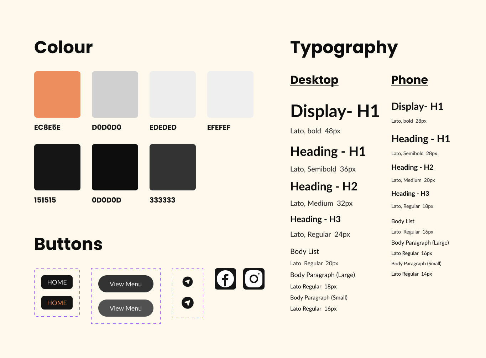

Sushi Kan
A Japanese sushi restaurant in Ottawa.
Sushi Kan serves fresh, authentic Japanese food with a modern touch. They specialize in sushi and sashimi. Enjoy great service and a comfortable setting for a memorable meal.
At Sushi Kan, we prioritize quality and authenticity. Every dish is carefully prepared to showcase the art of Japanese cooking, whether you're dining in or ordering takeout.
Redesign Sushi Kan Website
Problem
- The colour contrast of the orange is too low.
- The navbar and buttons don't have hover effects.
- The menu is not visible.
- Some images use too much space.
- There are two sections almost repeated.
- Doesn't have any social media link.
Solution
- Make sure the colour contrast is visible.
- Add hover effects to the navbar and buttons.
- Design a better menu with improved visibility.
- Reduce some images and repeated sections.
- Add social media links to improve SEO and business needs.
My Role
Sole UI/UX Designer
Tools
- Figma
- FigJam
- Adobe Illustrator
Project Duration
April 2024 - May 2024
Responsibilities
- Wireframing
- Prototyping
- Visual design
Design
Wireframes
The wireframes for the Sushi Kan website were created to map out a simple and clear layout. They helped plan where key elements like the menu and buttons would go, making sure the website would be easy to use and navigate.
Style

High Fidelity
The high-fidelity designs for Sushi Kan took the basic wireframes and added more detail, like colors, images, and interactive features. These final designs made the website look polished and ensured it matched the restaurant's style.